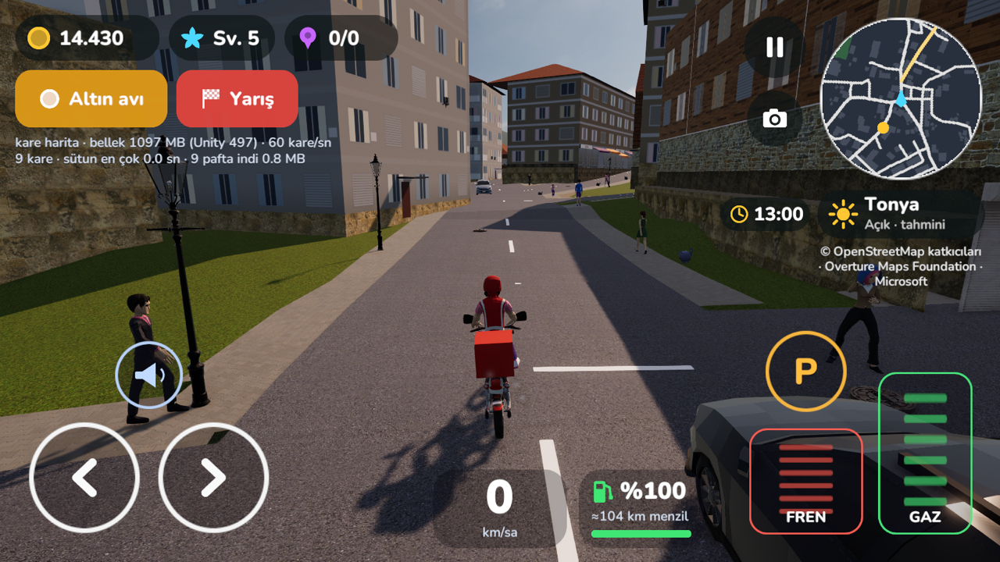
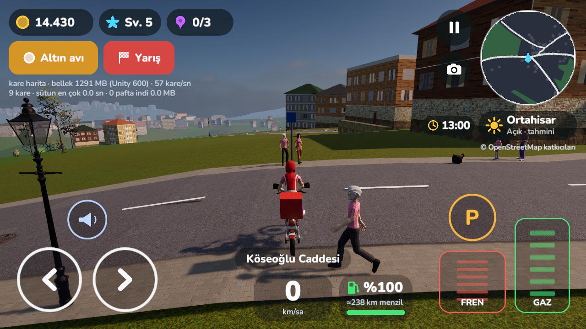
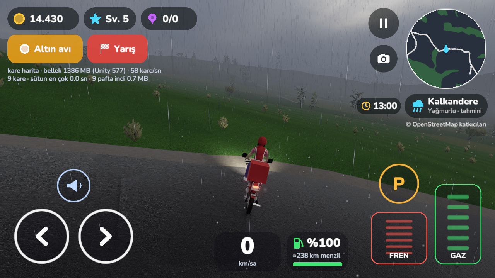
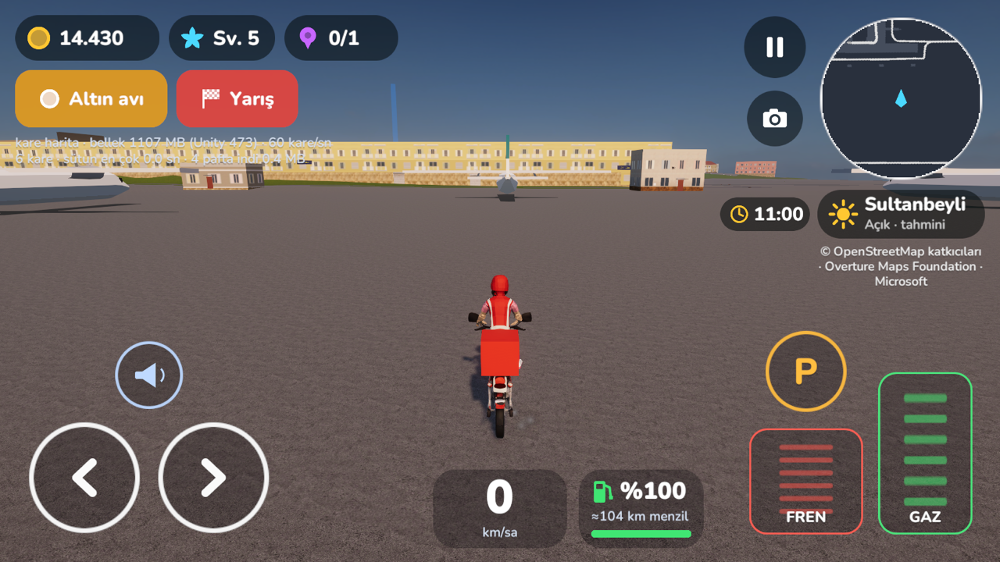

Mahalle, Türkiye'nin gerçek sokaklarında (OpenStreetMap) geçen bir 3B sürüş oyunu. Kendi sokağından başla, 81 ilin kesintisiz haritasında dolaş; paket teslim et, yolcu taşı, altın topla, yarış. Hesap yok, reklam yok.
Mahalle is a 3D driving game set on Türkiye's real streets (OpenStreetMap). Start from your own street and roam a seamless map of all 81 provinces: deliver packages, carry passengers, hunt gold and race. No account, no ads.
Mahalle ist ein 3D-Fahrspiel auf den echten Straßen der Türkei (OpenStreetMap). Starte in deiner eigenen Straße und fahre über eine nahtlose Karte aller 81 Provinzen: Pakete liefern, Fahrgäste befördern, Gold jagen, Rennen fahren. Kein Konto, keine Werbung.
Mahalle est un jeu de conduite 3D sur les vraies rues de la Turquie (OpenStreetMap). Démarre dans ta propre rue et parcours une carte continue des 81 provinces : livre des colis, transporte des passagers, chasse l'or, fais la course. Sans compte, sans pub.
Mahalle is een 3D-rijspel op de echte straten van Turkije (OpenStreetMap). Begin in je eigen straat en rijd over een naadloze kaart van alle 81 provincies: lever pakketten, vervoer passagiers, jaag op goud en race. Geen account, geen advertenties.
Mahalle es un juego de conducción 3D en las calles reales de Turquía (OpenStreetMap). Empieza en tu propia calle y recorre un mapa continuo de las 81 provincias: entrega paquetes, lleva pasajeros, caza oro y compite. Sin cuenta, sin anuncios.
Mahalle è un gioco di guida 3D sulle strade vere della Turchia (OpenStreetMap). Parti dalla tua strada e percorri una mappa continua di tutte le 81 province: consegna pacchi, trasporta passeggeri, caccia l'oro e corri. Niente account, niente pubblicità.
Mahalle — 3D-игра про вождение по настоящим улицам Турции (OpenStreetMap). Начни со своей улицы и езжай по бесшовной карте всех 81 провинции: доставляй посылки, вози пассажиров, собирай золото и участвуй в гонках. Без аккаунта и рекламы.
Mahalle لعبة قيادة ثلاثية الأبعاد في شوارع تركيا الحقيقية (OpenStreetMap). ابدأ من شارعك وتجوّل في خريطة متصلة لجميع المحافظات الـ81: سلّم الطرود، أوصل الركاب، اصطد الذهب وتسابق. بلا حساب وبلا إعلانات.
Mahalle — Türkiyənin real küçələrində (OpenStreetMap) 3D sürüş oyunudur. Öz küçəndən başla, 81 ilin kəsintisiz xəritəsində gəz: bağlama çatdır, sərnişin daşı, qızıl topla, yarış. Hesab yoxdur, reklam yoxdur.

Oyundan
From the game
Aus dem Spiel
Dans le jeu
Uit het spel
Del juego
Dal gioco
Из игры
من اللعبة
Oyundan



Harita
Map
Karte
Carte
Kaart
Mapa
Mappa
Карта
الخريطة
Xəritə
Yollar OpenStreetMap'ten, bina ayrıntıları Overture Maps ve Microsoft verisinden gelir. Kapının önünden başla, il sınırını fark etmeden sür.
Roads come from OpenStreetMap, building detail from Overture Maps and Microsoft data. Start right outside your door and cross province borders without noticing.
Die Straßen stammen von OpenStreetMap, die Gebäudedetails aus Overture-Maps- und Microsoft-Daten. Starte direkt vor deiner Haustür und überquere Provinzgrenzen, ohne es zu merken.
Les routes viennent d'OpenStreetMap, le détail des bâtiments d'Overture Maps et de Microsoft. Démarre devant ta porte et traverse les limites de province sans t'en rendre compte.
De wegen komen van OpenStreetMap, de gebouwdetails uit gegevens van Overture Maps en Microsoft. Begin voor je deur en rijd over provinciegrenzen zonder het te merken.
Las carreteras vienen de OpenStreetMap y el detalle de los edificios, de Overture Maps y Microsoft. Empieza frente a tu puerta y cruza los límites de provincia sin darte cuenta.
Le strade arrivano da OpenStreetMap, il dettaglio degli edifici da Overture Maps e Microsoft. Parti davanti a casa e attraversa i confini provinciali senza accorgertene.
Дороги — из OpenStreetMap, детали зданий — из данных Overture Maps и Microsoft. Начни прямо у своего подъезда и пересекай границы провинций, не замечая их.
الطرق من OpenStreetMap وتفاصيل المباني من بيانات Overture Maps وMicrosoft. ابدأ من أمام بابك واعبر حدود المحافظات دون أن تشعر.
Yollar OpenStreetMap-dən, bina təfərrüatları Overture Maps və Microsoft məlumatından gəlir. Qapının önündən başla, il sərhədlərini hiss etmədən sür.
Paket teslimi, yolcu taşıma, altın avı ve yarış görevleri.
Package delivery, passenger rides, gold hunts and races.
Paketlieferung, Fahrgäste, Goldjagd und Rennen.
Livraison de colis, courses de passagers, chasse à l'or et courses.
Pakketbezorging, passagiersritten, goudjacht en races.
Entrega de paquetes, pasajeros, caza de oro y carreras.
Consegna pacchi, passeggeri, caccia all'oro e gare.
Доставка посылок, пассажиры, охота за золотом и гонки.
توصيل الطرود ونقل الركاب وصيد الذهب والسباقات.
Bağlama çatdırılması, sərnişin daşıma, qızıl ovu və yarışlar.
Şehrin görülmeye değer köşelerini bul ve topla.
Find and collect the city's hidden corners.
Finde und sammle die verborgenen Ecken der Stadt.
Trouve et collectionne les coins cachés de la ville.
Vind en verzamel de verborgen hoekjes van de stad.
Encuentra y colecciona los rincones ocultos de la ciudad.
Trova e colleziona gli angoli nascosti della città.
Находи и собирай скрытые уголки города.
اعثر على زوايا المدينة الخفية واجمعها.
Şəhərin gizli guşələrini tap və topla.
Araçlarını topla, boya ve geliştir.
Collect vehicles, paint them and upgrade them.
Sammle Fahrzeuge, lackiere und verbessere sie.
Collectionne des véhicules, peins-les et améliore-les.
Verzamel voertuigen, spuit ze en verbeter ze.
Colecciona vehículos, píntalos y mejóralos.
Colleziona veicoli, verniciali e potenziali.
Собирай машины, крась и улучшай их.
اجمع المركبات وطلِها وطوّرها.
Nəqliyyat vasitələri topla, boya və gücləndir.
Gün ışığı saate, gökyüzü Apple hava verisine göre değişir.
Daylight follows the clock, the sky follows Apple's weather data.
Das Tageslicht folgt der Uhr, der Himmel den Wetterdaten von Apple.
La lumière suit l'horloge, le ciel suit les données météo d'Apple.
Het daglicht volgt de klok, de lucht volgt Apples weergegevens.
La luz sigue al reloj y el cielo, a los datos meteorológicos de Apple.
La luce segue l'orologio, il cielo i dati meteo di Apple.
Свет следует за часами, небо — за данными погоды Apple.
يتبع الضوء الساعة وتتبع السماء بيانات طقس Apple.
İşıq saata, səma Apple-ın hava məlumatına uyğun dəyişir.
Yakıt sürdükçe azalır; depoyu benzin istasyonlarında doldur.
Fuel runs down as you drive; refill at gas stations.
Der Sprit nimmt beim Fahren ab; tanke an Tankstellen nach.
Le carburant baisse en roulant ; fais le plein en station.
Brandstof loopt op tijdens het rijden; tank bij tankstations.
El combustible baja al conducir; repostar en las gasolineras.
Il carburante cala mentre guidi; fai il pieno ai distributori.
Топливо расходуется в пути — заправляйся на заправках.
ينقص الوقود أثناء القيادة؛ عبّئه من محطات البنزين.
Yanacaq sürdükcə azalır; benzin stansiyalarında doldur.
Tünellerden geç, havaalanlarının pistlerinde dolaş.
Drive through tunnels and around airport aprons.
Fahre durch Tunnel und über Flughafenvorfelder.
Traverse des tunnels et roule sur les aires d'aéroport.
Rijd door tunnels en over luchthavenplatforms.
Cruza túneles y recorre las plataformas de los aeropuertos.
Attraversa gallerie e gira sui piazzali degli aeroporti.
Проезжай тоннели и катайся по перронам аэропортов.
اعبر الأنفاق وتجوّل في ساحات المطارات.
Tunellərdən keç, hava limanı meydançalarında gəz.
Satın almalar
Purchases
Käufe
Achats
Aankopen
Compras
Acquisti
Покупки
المشتريات
Alışlar
Yeni cihazda “Satın alımları geri yükle” ile aldıklarını geri getirebilirsin (altın paketleri hariç).
On a new device, “Restore Purchases” brings back what you bought (except gold packs).
Auf einem neuen Gerät holt „Käufe wiederherstellen“ deine Käufe zurück (außer Goldpakete).
Sur un nouvel appareil, « Restaurer les achats » récupère tes achats (sauf les packs d'or).
Op een nieuw toestel haal je met “Aankopen herstellen” je aankopen terug (behalve goudpakketten).
En un dispositivo nuevo, «Restaurar compras» recupera lo comprado (salvo los paquetes de oro).
Su un nuovo dispositivo, «Ripristina acquisti» recupera quanto acquistato (tranne i pacchetti d'oro).
На новом устройстве «Восстановить покупки» вернёт купленное (кроме наборов золота).
على جهاز جديد يعيد «استعادة المشتريات» ما اشتريته (باستثناء حزم الذهب).
Yeni cihazda “Alışları bərpa et” aldıqlarını qaytarır (qızıl paketləri istisna).
Gizlilik
Privacy
Datenschutz
Confidentialité
Privacy
Privacidad
Privacy
Конфиденциальность
الخصوصية
Məxfilik
Konumun yalnızca sürüşe başlamak için cihazında kullanılır. Oyunu geliştirmek için yalnızca anonim çökme raporları ve kullanım istatistikleri toplanır.
Your location is used on your device only, to start a drive. Only anonymous crash reports and usage statistics are collected to improve the game.
Dein Standort wird nur auf deinem Gerät genutzt, um die Fahrt zu starten. Zur Verbesserung des Spiels werden nur anonyme Absturzberichte und Nutzungsstatistiken erhoben.
Ta position n'est utilisée que sur ton appareil, pour démarrer une partie. Seuls des rapports de plantage et des statistiques d'usage anonymes sont collectés pour améliorer le jeu.
Je locatie wordt alleen op je toestel gebruikt om een rit te starten. Alleen anonieme crashrapporten en gebruiksstatistieken worden verzameld om het spel te verbeteren.
Tu ubicación solo se usa en tu dispositivo, para empezar a conducir. Solo se recogen informes de fallos y estadísticas de uso anónimos para mejorar el juego.
La tua posizione viene usata solo sul dispositivo, per iniziare a guidare. Per migliorare il gioco raccogliamo solo rapporti di arresto anomalo e statistiche d'uso anonimi.
Геопозиция используется только на устройстве — чтобы начать поездку. Для улучшения игры собираются лишь анонимные отчёты о сбоях и статистика использования.
يُستخدم موقعك على جهازك فقط لبدء القيادة. لا نجمع سوى تقارير الأعطال والإحصاءات المجهولة لتحسين اللعبة.
Məkanın yalnız sürüşə başlamaq üçün cihazında istifadə olunur. Oyunu yaxşılaşdırmaq üçün yalnız anonim çökmə hesabatları və istifadə statistikası toplanır.
Destek
Support
Support
Assistance
Support
Ayuda
Assistenza
Поддержка
الدعم
Dəstək
Sık sorulan sorular, sürüm bilgisi ve iletişim destek sayfasında:
Frequently asked questions, version info and contact are on the support page:
Häufige Fragen, Versionsinfo und Kontakt findest du auf der Support-Seite:
Questions fréquentes, version et contact sont sur la page d'assistance :
Veelgestelde vragen, versie-info en contact vind je op de supportpagina:
Preguntas frecuentes, versión y contacto están en la página de ayuda:
Domande frequenti, versione e contatti sono nella pagina di assistenza:
Частые вопросы, версия и контакты — на странице поддержки:
الأسئلة الشائعة ومعلومات الإصدار والتواصل في صفحة الدعم:
Tez-tez verilən suallar, versiya və əlaqə dəstək səhifəsindədir:
Destek sayfasıSupport pageSupport-SeitePage d'assistanceSupportpaginaPágina de ayudaPagina di assistenzaСтраница поддержкиصفحة الدعمDəstək səhifəsi info@phisoftware.com.tr